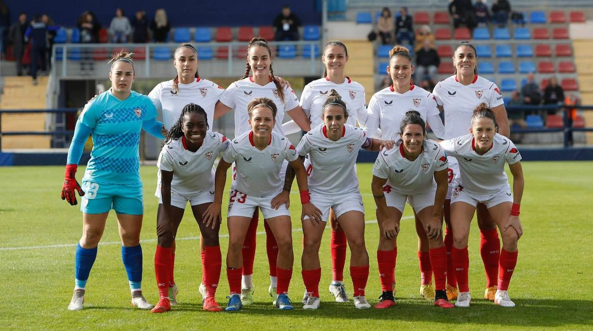
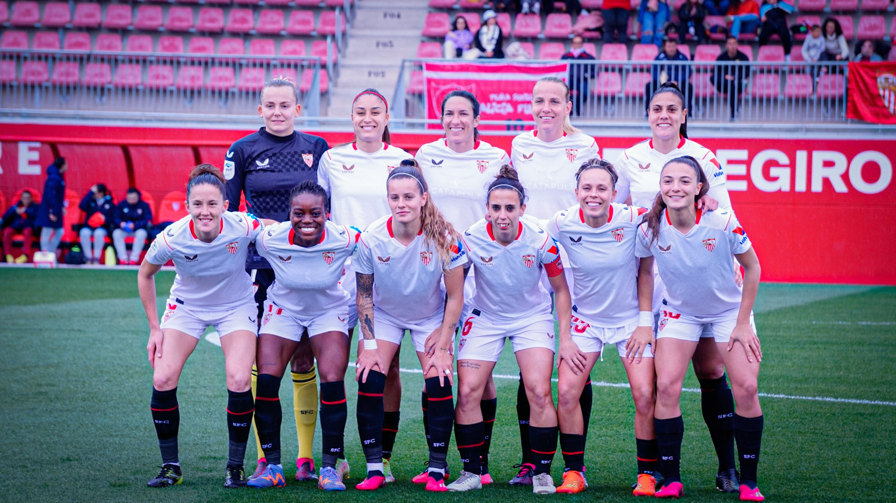

El C. D. Híspalis és un club de barri de la ciutat de Sevilla, fundat el 1972 i que posseeix diversos equips de futbol base. El 1992 l'Híspalis crea l'equip femení, que a poc a poc va anar creixent fins a arribar a la màxima categoria del futbol femení i esdevenir l'equip més representatiu del club. L'any 2004 el Sevilla Futbol Club adquireix l'equip femení del C. D. Híspalis, passant aquest a utilitzar els colors, distintius i nom així com entrenar i disputar els seus partits com a local a la ciutat esportiva del Sevilla Futbol Club. D'aquesta manera el Sevilla Femení (oficialment C. D. Híspalis) va competir durant quatre temporades a la Superlliga. Els èxits esportius més importants d'aquesta etapa són el subcampionat de la Superlliga de la temporada 2005-06 i assolir les semifinals de la Copa de la Reina la temporada 2006-07.
La temporada 2007-08 l'equip baixa de categoria. Aleshores el Sevilla Futbol Club es desvincula del C. D. Híspalis i crea un nou equip femení, ja dins de l'estructura del club, que comença a competir des de la categoria més baixa, la Provincial. Apareix així l'actual Sevilla Futbol Club Femení. La temporada 2008-09 l'equip, format majoritàriament per jugadores de l'Híspalis i del planter sevillista, arrasa a la categoria Provincial i aconsegueix l'ascens a Primera Nacional.1 No obstant això la temporada 2009-10 es produeix una ampliació de la Superlliga i el Sevilla F. C. és convidat, juntament amb altres clubs, a disputar la Superlliga aquesta temporada. Retorna així l'equip a la màxima categoria del futbol femení. A la temporada 2011/12, l'equip va quallar una gran actuació a la Segona Divisió Femenina d'Espanya, i va acabar ascendint de nou a la màxima categoria del futbol femení espanyol. Al seu torn, el Sevilla FC Femení B també va ascendir a la Segona Divisió, completant una gran any a les categories femenines del Sevilla FC.
